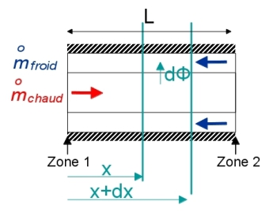

Moyenne logarithmique
Rappel :

\(\Phi=\overline{h_{eq}} \pi D_i L \frac{\left( T_{chaud}^2-T_{froid}^2\right)-\left( T_{chaud}^1-T_{froid}^1\right)}{ln\left( \frac{T_{chaud}^2-T_{froid}^2}{T_{chaud}^1-T_{froid}^1}\right )}\)
\(\Phi = K S \Delta \theta_{ml}\)